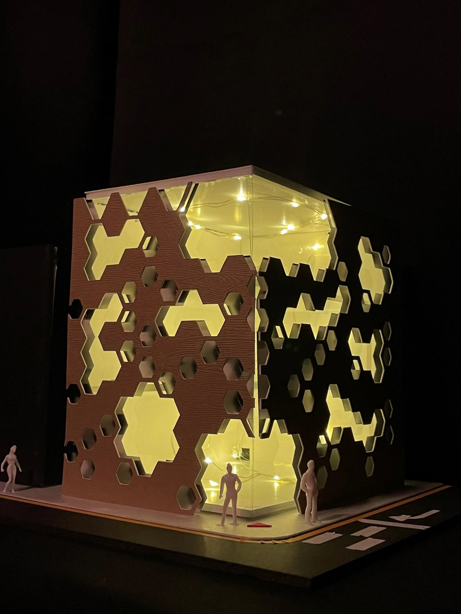

COMMERCIAL UNITS
Empty and Fill Music Paradise
소리를 모으고 내보내는 이미지를 입면으로 옮긴 악기 상점. 반복되는 패턴과 빛으로 공간의 성격을 표현했습니다.
- YEAR / SEMESTER
- 2학년 1학기 · 2022
- PROJECT TYPE
- 상업공간 · 입면 설계
- CONTRIBUTION
- 개인 설계
- SITE / SUBJECT
- 광주광역시 동구 서남로 16 · 설계 대상지

THE IDEA
생각의 출발점
주택 설계의 ‘소리 수집’ 개념을 상업공간으로 확장했습니다. 현악기와 건반악기를 다루는 상점, 전시와 휴식 공간을 설정하고, 소리의 파형과 반향을 패턴으로 연구했습니다.
- 01
도시의 조건
주변 건물과 교차로의 관계를 분석하고 전면의 표현 방식을 고민했습니다.
- 02
비움과 채움
기하학적 패턴이 겹치며 만드는 틈과 깊이를 입면 스케치로 실험했습니다.
- 03
빛과 재료
목재와 금속의 이미지, 빛이 통과하는 개구부를 모형으로 확인했습니다.
PROCESS & OUTCOME
과정과 결과
사진을 누르면 크게 볼 수 있습니다.